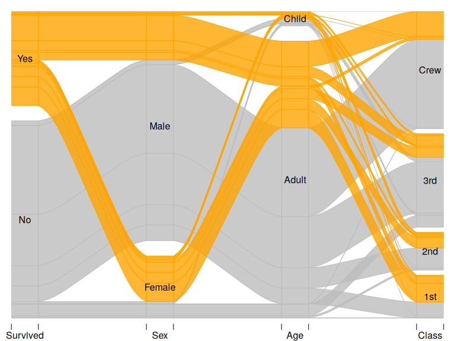
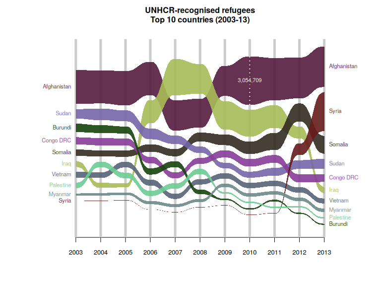

What are alluvial diagrams? See for example:
- Wikipedia
- My blog post showing-off this package
- Some discussion on CrossValidated
This package use base R graphics (R Core Team 2021) package. For Grammar of Graphics implementation see ggalluvial (Brunson and Read 2020; Brunson 2020).
Examples
Alluvial diagram of datasets::Titanic data made with alluvial(). Notice how each category block becomes a stacked barchart showing relative frequency of survivors.
| Class | Sex | Age | Survived | n |
|---|---|---|---|---|
| 1st | Male | Child | No | 0 |
| 2nd | Male | Child | No | 0 |
| 3rd | Male | Child | No | 35 |
| Crew | Male | Child | No | 0 |
| 1st | Female | Child | No | 0 |
| 2nd | Female | Child | No | 0 |
alluvial(
select(tit, Survived, Sex, Age, Class),
freq=tit$n,
col = ifelse(tit$Survived == "Yes", "orange", "grey"),
border = ifelse(tit$Survived == "Yes", "orange", "grey"),
layer = tit$Survived != "Yes",
alpha = 0.8,
blocks=FALSE
)## Warning in alluvial(select(tit, Survived, Sex, Age, Class), freq = tit$n, : `blocks` is deprecated; use `strata` instead.
## TRUE -> "box", FALSE -> "stripes", "bookends" -> strata_bookends()
Alluvial diagram for multiple time series / cross-sectional data based on alluvial::Refugees data made with alluvial_ts().
| country | year | refugees |
|---|---|---|
| Afghanistan | 2003 | 2136043 |
| Burundi | 2003 | 531637 |
| Congo DRC | 2003 | 453465 |
| Iraq | 2003 | 368580 |
| Myanmar | 2003 | 151384 |
| Palestine | 2003 | 350568 |
set.seed(39) # for nice colours
cols <- hsv(h = sample(1:10/10), s = sample(3:12)/15, v = sample(3:12)/15)
alluvial_ts(Refugees, wave = .3, ygap = 5, col = cols, plotdir = 'centred', alpha=.9,
grid = TRUE, grid.lwd = 5, xmargin = 0.2, lab.cex = .7, xlab = '',
ylab = '', border = NA, axis.cex = .8, leg.cex = .7,
leg.col='white',
title = "UNHCR-recognised refugees\nTop 10 countries (2003-13)\n")
Installation
Install stable version from CRAN using
install.packages("alluvial")or development version from GitHub using remotes::install_github():
remotes::install_github("mbojan/alluvial", build_vignettes=TRUE)References
Brunson, Jason Cory. 2020. “ggalluvial: Layered Grammar for Alluvial Plots.” Journal of Open Source Software 5 (49): 2017. https://doi.org/10.21105/joss.02017.
Brunson, Jason Cory, and Quentin D. Read. 2020. “Ggalluvial: Alluvial Plots in ’Ggplot2’.” http://corybrunson.github.io/ggalluvial/.
R Core Team. 2021. R: A Language and Environment for Statistical Computing. Vienna, Austria: R Foundation for Statistical Computing. https://www.R-project.org/.